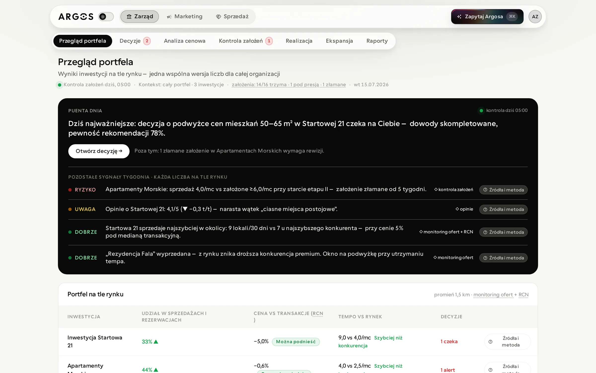
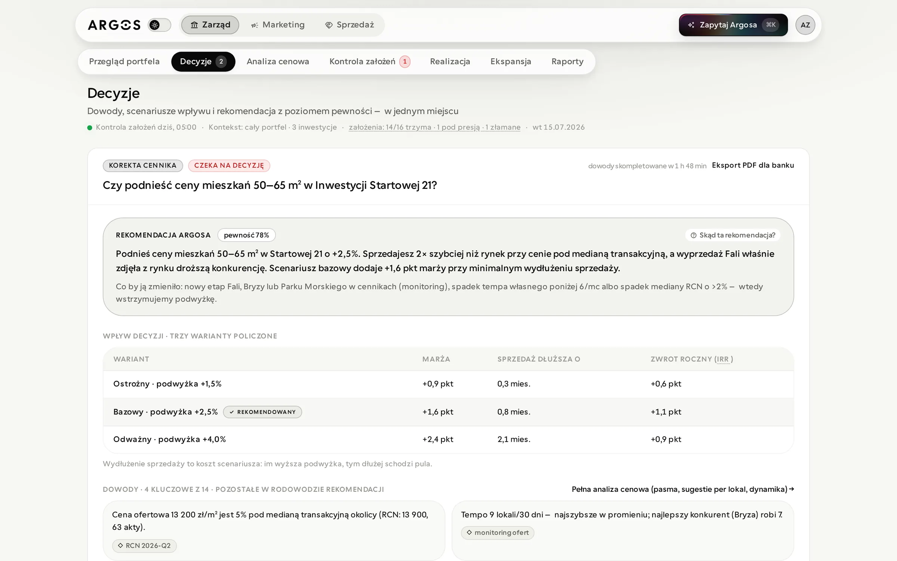
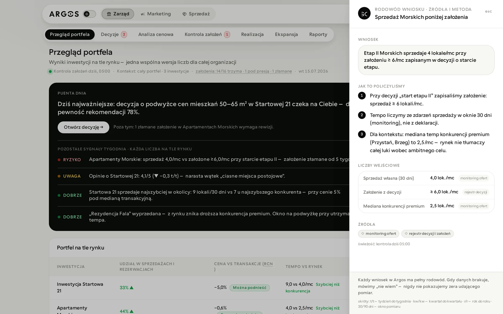
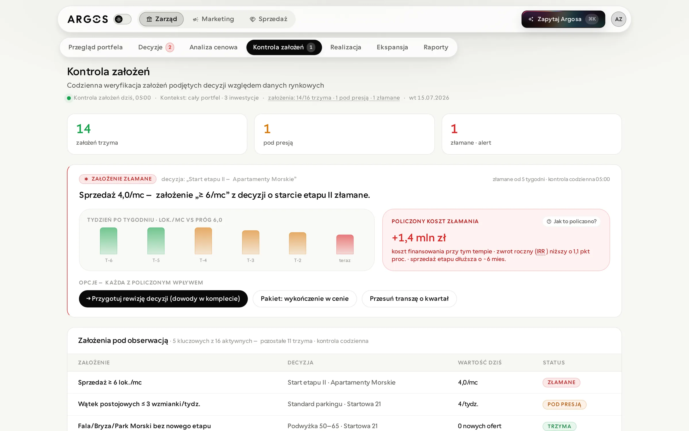
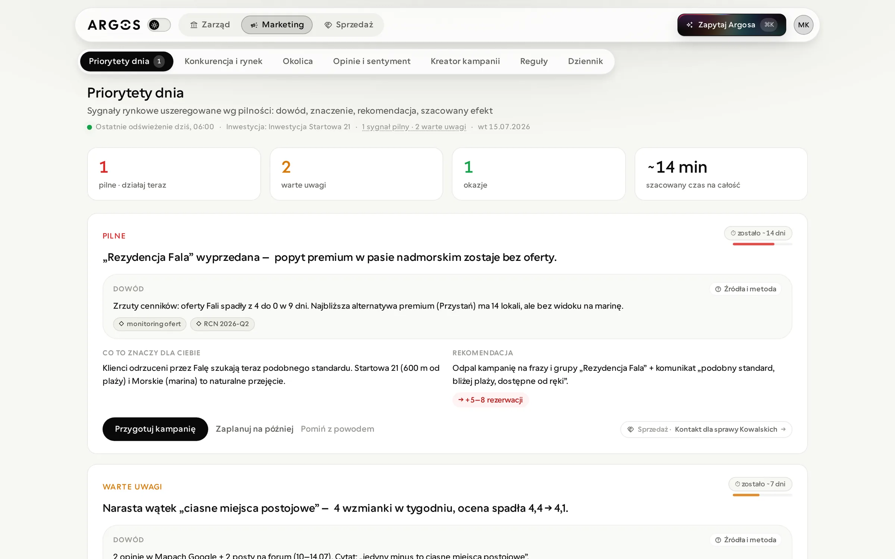
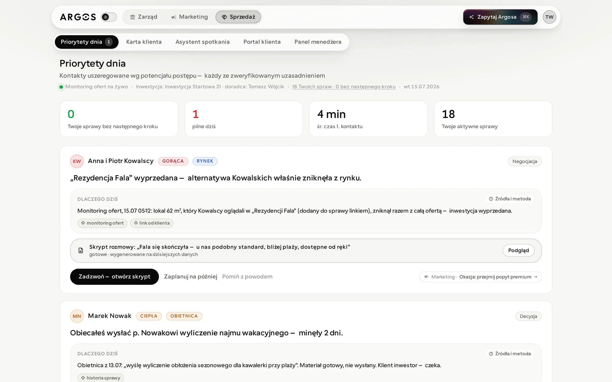
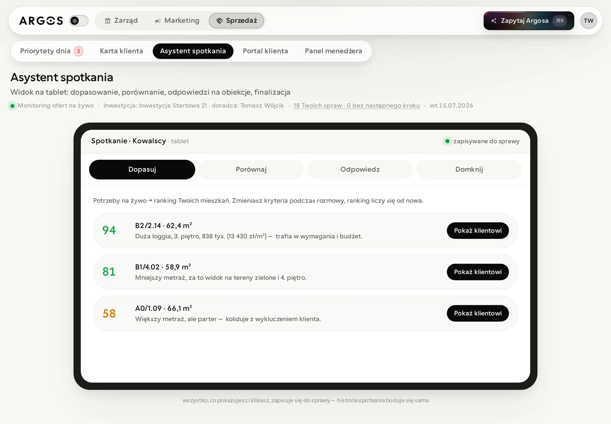
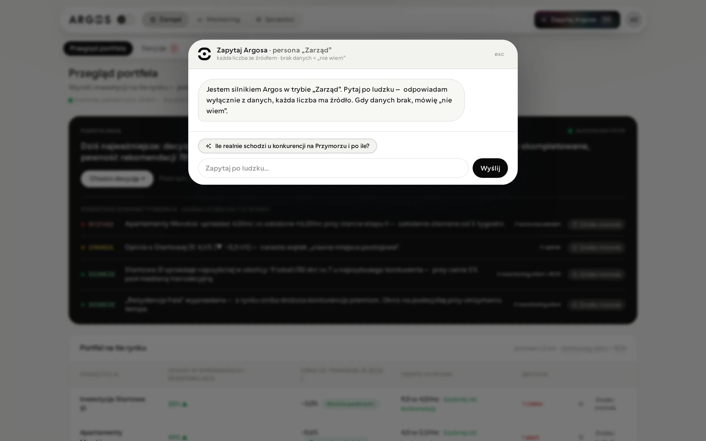

Argos
We believe real estate developers need one shared version of the market, because pricing, marketing and sales decisions are made on scattered data, optimistic assumptions and numbers nobody can trace back to a source.

From mission to value
-
00
Mission
See more, decide better, reach further.
-
01
Audience
Real estate developers
Boards, marketing and sales teams selling residential investments in a market where price transparency is becoming an obligation.
Can one product serve the board, marketing and sales without three versions of the truth? -
02
User
Three people, one investment
A board member deciding on prices and new plots, a marketer reacting to competitors, and a sales advisor preparing the next call.
Does each of them see what matters to them in the first five seconds? -
03
Need
Answers they can defend
A recommendation is only useful when you can show where every number came from and what would change it.
Can every conclusion be traced to a source in one click? -
04
Infrastructure
Market signals, checked daily
Competitor price lists, transaction prices, reviews and neighbourhood data feed detectors that check decisions and their assumptions every morning.
When data is missing, does the product say "I don't know" instead of showing a zero? -
05
Product
Three modes of work
Management, Marketing and Sales share the same data and hand work to each other, with Ask Argos and the sources drawer available everywhere.
After an action, is it always visible where the work went? -
06
Value
Decisions with evidence
Price changes, campaigns and calls start from a costed recommendation, and assumptions are watched after the decision is made.
Do teams act on the recommendation instead of rebuilding the numbers in a spreadsheet?
Decisions with evidence
Every decision arrives as a question with a recommendation and its confidence, three costed scenarios (margin, longer sale, annual return) and the key evidence underneath. Approve, postpone and reject carry equal weight: the tool supports the decision, it never pushes for a yes.

Every number has a lineage
Any conclusion opens a drawer with its lineage: the finding, how it was calculated, the input numbers with their sources, and how fresh the data is. When data is missing, Argos says "I don't know" instead of showing a zero that pretends to be a measurement.

Assumption control
Assumptions written down when a decision was made are checked against market data every morning. When one breaks, Argos shows the week-by-week trend, the calculated cost of the gap and the options, each with its own impact.

Marketing: what to do today
Market signals are ranked by urgency. Each card reads the same way: evidence, what it means for you, the recommendation and its estimated effect, then one filled action. Work handed to another team is linked, so it is always clear where it went.

Sales: a fair reason to call
Contacts are ranked by how likely they are to move forward, each with a verified reason to reach out today and a call script generated on the day's data.

Meeting assistant on a tablet
During a meeting the advisor adjusts the client's criteria and the ranking of available flats updates on the spot, then moves on to compare, answer objections and close. Everything shown is saved to the case.

Ask Argos
⌘K opens a question box that answers in the persona of the current mode, only from data, with a source for every number.

Credibility is the product
In market intelligence a single mismatched number destroys trust in all the others. So one concept gets one name, one number comes from one source, and the scope of every figure is stated plainly: "team cases: 54" next to "your cases: 18".
That rule shaped the interface more than any visual decision: answer first, then impact, then evidence, and the lineage of every conclusion never hidden behind an accordion.
What shaped the product
- The five second test: the first line of every screen says what matters most and what to click.
- One filled action per card, everything else is a quiet link.
- No dead controls: an element looks clickable only when it visibly changes something.
- Every abbreviation gets a gloss the first time it appears on a screen.
- A brand system of its own: mineral canvas, black actions and one refraction effect reserved for the highlighted action.